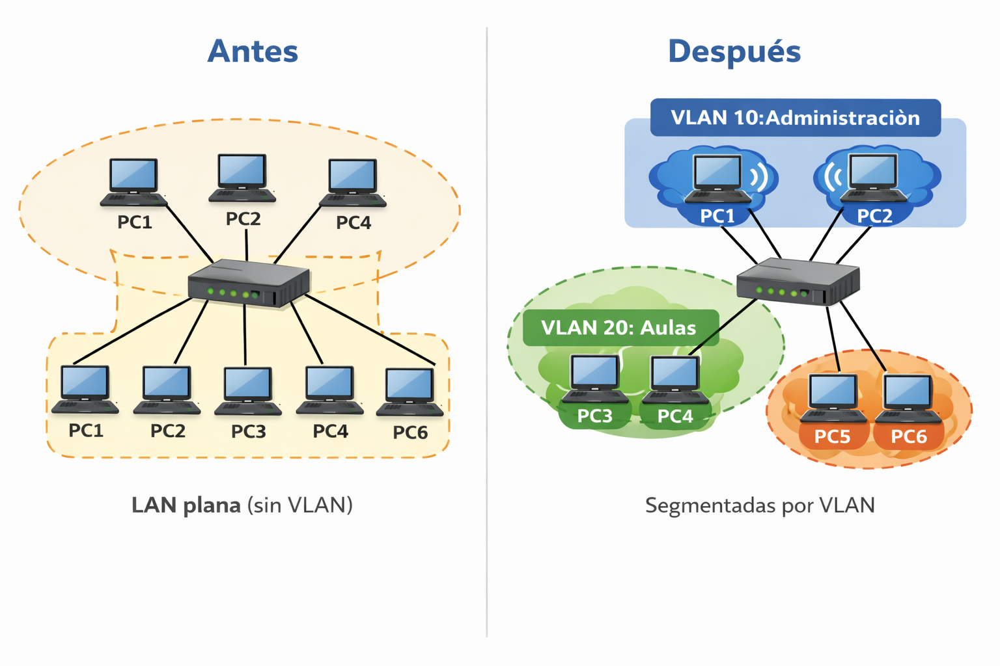
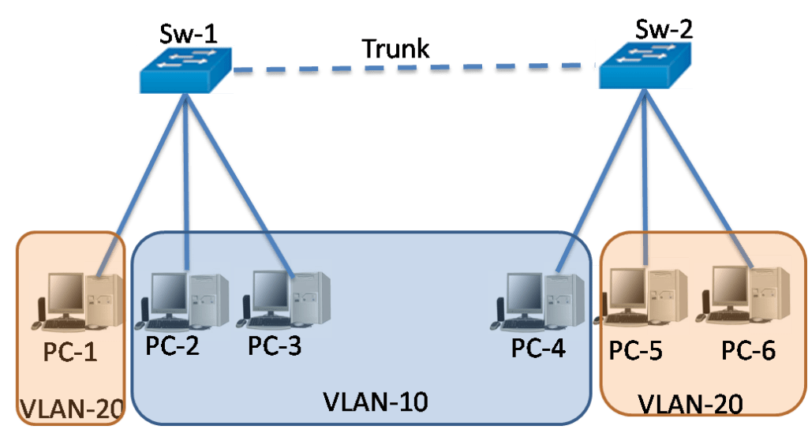
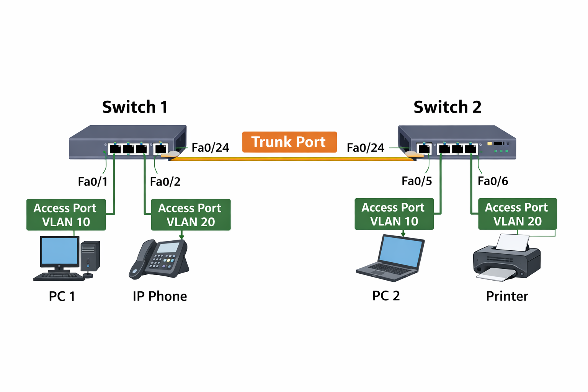

REDES VIRTUALES - VLAN¶
Introducción¶
Hasta ahora hemos trabajado el direccionamiento IPv4, subnetting/VLSM y enrutamiento estático. Con eso ya somos capaces de crear redes distintas e interconectarlas con un router.
El siguiente paso natural es aprender a organizar una red local (LAN) de forma lógica, sin necesidad de tener un switch distinto para cada grupo de usuarios. Ahí entran las VLAN (Virtual LAN).
Con VLAN veremos cómo:
- Dividir una LAN en varias redes lógicas (separadas) usando switches.
- Reducir los broadcast y mejorar el rendimiento en redes medianas/grandes.
- Separar departamentos o grupos (administración, aulas, profesorado, invitados…) aumentando el orden y la seguridad.
- Preparar la red para enrutar entre VLAN (inter-VLAN routing).
1. Repaso de conceptos¶
Antes de crear VLAN en un switch, necesitamos entender qué problema resuelven y qué conceptos de red necesitamos.
1.1 Dominios de difusión¶
Dominio de difusión (broadcast domain)
Recuerda que un dominio de difusión es el conjunto de equipos que reciben una trama de broadcast (destino MAC FF:FF:FF:FF:FF:FF).
Cómo hemos visto que se generan los broadcast en la red, por ejemplo:
- Cuando un equipo debe averiguar la dirección MAC de un aquipo con el que se quiere comunicar lanza un ARP Request (“¿quién tiene la IP X? respóndeme”).
- Cuando hacemos ping a la dirección de broadcast de la red.
- En general suelen generar broadcast los procolos de red que deben descubrir servicios o que se anuncian dentro de la red
Hasta ahora hemos visto que en una red sin VLAN, un switch crea un único dominio de difusión y que los routers son frontera de los dominios de difusión al no propagarlos.
Con las VLAN vermos que cada VLAN, es un dominio de difusión independiente por lo que dentro del mismo switch puede haber varios dominios de difusión.

1.2 LAN “plana” (sin VLAN)¶
Imagina una centro educativo o una pequeña empresa con un solo switch y equipos que son utilizados por personal de diferentes departamentos:
- Administración
- Profesorado
- Aulas
- Invitados
Si no hay VLAN, todo está en la misma red local (LAN plana). Eso implica:
-
Todos comparten el mismo dominio de difusión Cuando un equipo lanza un broadcast (por ejemplo ARP), el switch lo reenvía a todos los puertos (excepto al de entrada).
-
Cuando la red crece van a haber más broadcast en la red, lo que implica menos eficiencia. En redes pequeñas no se nota mucho, pero con más equipos:
- Aumenta el tráfico “no útil” (broadcast/multicast).
- Algunos equipos procesan tramas que no les aportan nada.
-
Menos control y peor organización. Al estar todos los equipos juntos:
- Es más fácil que equipos de invitados puedan acceder a recursos internos.
- Es más difícil aplicar políticas por grupos.
1.3 Problemas que resuelve VLAN¶
VLAN permite crear varias “LAN lógicas” dentro del mismo switch.
Con VLAN conseguimos:
- Segmentación por grupos: cada departamento/aula está en su VLAN.
- Separación de broadcasts: el broadcast de la VLAN de un grupo no llega a la VLAN de otro grupo. Por defecto, no hay comunicación entro los equipos de diferentes VLAN aunque estén conectados al mismo switch.
- Orden: la red se entiende mejor y se documenta mejor.
- Base para seguridad: para que dos VLAN se comuniquen, tendrás que pasar por Capa 3 (router o switch L3), donde se pueden crear reglas para controlar la comunicación.
2. Conceptos VLAN¶
2.1 Definición¶
Una VLAN (Virtual LAN) es una forma de dividir un switch (Capa 2) en varias redes lógicas independientes.
- Cada VLAN se comporta como si fuera un “switch lógico” separado.
- Los equipos en distintas VLAN quedan aislados a nivel de Capa 2.
- El broadcast de una VLAN no llega a las demás.
2.2 VLAN ID (identificador de VLAN)¶
Cada VLAN se identifica con un número llamado VLAN ID.
- Se suele usar un número (por ejemplo 10, 20, 30) para que sea fácil de recordar.
-
Se puede asociar al ID de la VLAN un nombre descriptivo:
-
VLAN 10 → “ADMIN”
- VLAN 20 → “AULAS”
- VLAN 30 → “INVITADOS”
2.3 VLAN por puerto¶
Hay diferentes formas de crear VLANs, la forma más común de crear VLAN es asignar un puerto del switch a una VLAN.
- Un PC conectado a un puerto pertenece a la VLAN configurada en ese puerto.
- Si cambias el puerto del switch de VLAN, el PC “cambia de red lógica” sin cambiar el cableado.
- Para que dos equipos conectados en un mismo switch a la misma VLAN se puedan comunicar entre si deben además pertenecer a la misma red IP.
Ejemplo:
- Fa0/1 y Fa0/2 → VLAN 10 (Servidores) → LAN 192.168.10.0/24
- Fa0/3 y Fa0/4 → VLAN 20 (Aulas) → LAN 192.168.20.0/24
3. Funcionamiento de VLAN en un switch¶
En este apartado vamos a entender qué hace realmente el switch cuando trabajamos con VLAN.
3.1 La tabla MAC y el aprendizaje del switch¶
Recordemos que un switch trabaja en Capa 2 (Ethernet). Su función principal es reenviar tramas según la MAC destino.
Para decidir por que puerto debe enviar una trama consulta su tabla de direccioonamiento MAC. Y es tabla se llena automáticamente:
- Cuando el switch recibe una trama, mira la MAC origen.
- Guarda una asociación: MAC origen → puerto por el que entró.
En Packet Tracer al mostrar la tabla podemos obtener algo como:
Switch# show mac-address-table
Mac Address Table
-------------------------------------------
Vlan Mac Address Type Ports
---- ----------- -------- -----
1 00D0.BA12.3401 DYNAMIC Fa0/1
1 00D0.BA12.3402 DYNAMIC Fa0/2
1 00D0.BA12.3403 DYNAMIC Fa0/3
1 00D0.BA12.3404 DYNAMIC Fa0/4
Cuando introducimos VLAN, el switch divide su funcionamiento en varios dominios independientes. Pasa de tener una sola LAN a tener varios switches lógicos o virtuales, uno por VLAN.
Una vez creadas las VLANs y asignadas a los puertos ahorá la tabla tendría el siguiente aspecto:
Switch# show mac-address-table
Mac Address Table
-------------------------------------------
Vlan Mac Address Type Ports
---- ----------- -------- -----
10 00D0.BA12.3401 DYNAMIC Fa0/1
10 00D0.BA12.3402 DYNAMIC Fa0/2
20 00D0.BA12.3403 DYNAMIC Fa0/3
20 00D0.BA12.3404 DYNAMIC Fa0/4
La Consecuencia directa de asignar VLAN a los puertos es que una trama de broadcast desde un puerto de la VLAN 10 solo se reenvía a los puertos que pertenecen a VLAN 10. Los puertos de VLAN 20 no la reciben. Y viceversa al mandar una trama de broadcast desde un puerto de la VLAN 20.
3.2 VLAN por defecto. VLAN 1¶
En los switches Cisco, por defecto, todos los puertos están en VLAN 1 ya que la VLAN 1 existe siempre. Esto es un conveni que utilizan CISCO y otros fabricantes. También hay fabricantes enlos que los puertos no tienen una VLAN explícita hasta que no se le asigna.
Por ello, en diseños reales se suele se evita usar la VLAN 1 si estamos aplicando VLAN de forma explícita. De esa forma, cuando vemos que un puerto tiene asignada una VLAN distinta de 1 sabemos a ciencia cierta que ese switch está segmentado.
3.3 Tipos de puertos VLAN¶
Dependiendo del tipo de dispositivo que hay al otro extremo del puerto de un switch tenemos puertos de diferente tipo en cuanto a VLAN y, que a su vez se configuran de distinta forma.
La idea básica es que hay puertos cuyo tráfico contiene en la trama Ethernet etiquetas (tags) de VLAN y puertos que no. Más adelante veremos en que consiste el etiquetado VLAN.
Puerto de acceso (Access Port)¶
Un puerto de acceso es un puerto del switch configurado para pertenecer a una sola VLAN.
- Se suelen usar cuando dicho puerto va a conectar dispositivos finales como un PC, impresora, cámara IP, servidor, etc.
- Las tramas Ethernet que salen por uno de estos puertos van sin etiqueta VLAN (sin “tag”), porque los equipos normales no trabajan con VLAN.
- Todo lo que entra por ese puerto (tramas sin etiquetar) el switch lo asocia a la VLAN configurada en el puerto.
Puerto trunk (Trunk Port)¶
Un puerto trunk es un puerto del switch configurado para transportar varias VLAN a la vez por el mismo enlace.
Se usa principalmente para:
- Conectar switch con switch (y que viajen varias VLAN entre ellos).
- Conectar switch con router.
- Conectar switch con algunos dispositivos que gestionan VLAN (APs, algunos servidores, etc.).
En un puerto trunk, las tramas Ethernet suelen ir etiquetadas, indicando a qué VLAN pertenecen. Esto permite que por un único cable se puedan transportar “muchas redes lógicas”.

4. Configuración básica de VLAN switches Cisco¶
Vamos a aprender a:
- Crear VLAN (ID y nombre).
- Poner puertos en modo access y asignarlos a una VLAN.
- Verificar con comandos
showque el switch tiene la configuración correcta. - Detectar fallos típicos (puerto en VLAN incorrecta, VLAN no creada, IP mal puesta…).
4.1 Topología de ejemplo¶
- 1 switch
-
4 PCs conectados a:
-
PC1 → Fa0/1
- PC2 → Fa0/2
- PC3 → Fa0/3
- PC4 → Fa0/4
Diseño:
- VLAN 10: PC1 y PC2
- VLAN 20: PC3 y PC4
Direccionamiento:
Dado que cada VLAN define una red virtual diferente deberían tener direcciones de red diferentes. Vamos a asignar:
-
VLAN 10 → la red 192.168.10.0/24
- PC1: 192.168.10.11/24
- PC2: 192.168.10.12/24
-
VLAN 20 → la red 192.168.20.0/24
-
PC3: 192.168.20.13/24
- PC4: 192.168.20.14/24
4.2 Pasos¶
Paso 1: crear las VLAN en el switch¶
Entramos al switch y crea VLAN 10 y 20 (y ponles nombre):
>enable
#configure terminal
Switch(config)#vlan 10
Switch(config-vlan)# name SERVIDORES
Switch(config-vlan)#exit
Switch(config)#vlan 20
Switch(config-vlan)# name AULAS
Switch(config-vlan)#exit
El nombre no afecta al funcionamiento, pero ayuda a distinguirlas.
Paso 2: asignar puertos a una VLAN (modo access)¶
Asignar Fa0/1 y Fa0/2 a VLAN 10
Switch>enable
Switch#configure terminal
Switch(config)#configure terminal
Switch(config)#interface fastEthernet 0/1
Switch(config-if)#switchport mode access
Switch(config-if)#switchport access vlan 10
Switch(config-if)#exit
Switch(config)#interface fastEthernet 1/1
Switch(config-if)#switchport mode access
Switch(config-if)#switchport access vlan 10
Switch(config-if)#exit
Asignar Fa0/3 y Fa0/4 a VLAN 20
Switch(config)#interface fastEthernet 2/1
Switch(config-if)#switchport mode access
Switch(config-if)#switchport access vlan 20
Switch(config-if)#exit
Switch(config)#interface fastEthernet 3/1
Switch(config-if)#switchport mode access
Switch(config-if)#switchport access vlan 20
Switch(config-if)#exit
Paso 3: verificación¶
Ver las VLAN y sus puertos
Salida esperada (simulada):
VLAN Name Status Ports
---- -------------------------------- --------- -------------------------------
1 default active Fa5/1, Fa6/1, Fa7/1, ...
10 SERVIDORES active Fa0/1, Fa2/1
20 AULAS active Fa3/1, Fa4/1
...
Interpretación:
- Los puertos que no se han configurado seguirán en VLAN 1 (por defecto).
- Los puertos que configurados deben aparecer en la VLAN correcta.
Verificar un puerto concreto
Cosas que te interesan:
- Administrative Mode: static access
- Access Mode VLAN: 10 (SERVIDORES)
Verificar aprendizaje MAC por VLAN
Una vez haya tráfico (ping/arp), el switch aprende MACs.
Salida esperada:
Vlan Mac Address Type Ports
---- ----------- -------- -----
10 00D0.BA12.3401 DYNAMIC Fa0/1
10 00D0.BA12.3402 DYNAMIC Fa1/1
20 00D0.BA12.3403 DYNAMIC Fa2/1
20 00D0.BA12.3404 DYNAMIC Fa3/1
Si no aparece nada, es porque no ha habido tráfico todavía. Genera tráfico y vuelve a consultar.
Paso 4: pruebas de conectividad¶
- PC1 ↔ PC2: ping OK (misma VLAN y misma subred)
- PC3 ↔ PC4: ping OK (misma VLAN y misma subred)
- PC1 ↔ PC3: ping falla (VLAN distinta + subred distinta + no hay router)
Por tanto, la segmentación funciona.
5. Comunicación entre switches: Trunking¶
Hasta ahora hemos creado VLAN en un solo switch. Pero en una red real casi siempre hay varios switches.
El problema es que, si tienes VLAN 10 y VLAN 20 en Switch1 y también en Switch2, necesitas que esas VLAN “viajen” entre switches para que:
- Un PC en VLAN 10 en Switch1 pueda comunicarse con otro PC en VLAN 10 en Switch2.
- Lo mismo para VLAN 20, VLAN 30, etc.
Ahí es donde entra el trunk.

En la imagen anterior tenemos dos switches unidos por un cable:
-
En Switch1:
-
PC1 (VLAN 10)
- IP Phone (VLAN 20)
-
En Switch2:
-
PC2 (VLAN 10)
- Printer (VLAN 20)
Si el enlace entre switches fuera “normal” (access), solo podría pertenecer a una VLAN. Eso significa que o pasa VLAN 10 o pasa VLAN 20, pero no las dos.
Para solucionarlos convertir ese enlace entre switches en un trunk, que permite transportar múltiples VLAN por el mismo cable.
5.1 Etiquetado 802.1Q¶
El estándar IEEE 802.1Q (dot1q) especifica com etiquetar tramas Ethernet cuando se usa VLAN. Al estar incluida la especificación en un estándar switches de diferentes fabricantes pueden coexistir en la misma red físca y comunicarse entre ellos sin problema.
En un enlace trunk, el switch necesita saber a qué VLAN pertenece cada trama que cruza el enlace. Para eso el estándar IEEE 802.1Q (dot1q) como etiquetarla.
Cuando una trama ha entrado por un puerto en modod access con una VLAN determinada y necesita viajar a otro switch:
- El switch añade una etiqueta (tag) a la trama Ethernet con el VLAN ID del puerto access.
- El switch del otro lado lee esa etiqueta y coloca la trama en la VLAN correcta.
Por tanto:
- En los puertos access, las tramas normalmente van sin etiqueta hacia el PC.
- En los puertos trunk, las tramas van etiquetadas
5.2 VLAN permitidas en el trunk (permit / restrict)¶
Un trunk puede configurarse para:
- permitir todas las VLAN (por defecto en muchos escenarios)
- o permitir solo algunas (mejor práctica)
5.3 VLAN nativa y etiquetado¶
En 802.1Q existe el concepto de VLAN nativa, es la VLAN que se envía sin etiqueta en el trunk. En los dispositivos Cisco, por defecto suele ser VLAN 1. * Buena práctica: no usar VLAN 1 para usuarios y, si se cambia, hacerlo con cuidado.
5.4 Configuración del enlace trunk entre switches¶
En SW1 y SW2 ejecutamos:
Switch#configure terminal
Switch(config)#interface fa0/24
Switch(config-if)#switchport mode trunk
Switch(config-if)#switchport trunk allowed vlan 10,20 # Opcional
Con esto el enlace Fa0/24 ↔ Fa0/24 entre SW1 y SW2 transporta VLAN 10 y 20.
Verificación
En cada switch:
Salida esperada:
Port Mode Encapsulation Status Native vlan
Fa0/24 on 802.1q trunking 1
Port Vlans allowed on trunk
Fa0/24 10,20
Port Vlans allowed and active in management domain
Fa0/24 10,20
Expliación:
- El puerto Fa0/24 es trunk operativo con encapsulación 802.1Q activada.
- Su VLAN nativa es la 1. Eso significa que, en ese trunk, el tráfico de la VLAN nativa puede ir sin etiqueta (untagged).
- El trunk solo deja pasar VLAN 10 y 20.
- Y además confirma que 10 y 20 existen/están activas en el switch.
5.5 Pruebas de conectividad¶
Si hacemos las siguientes pruebas:
- PC1 (VLAN 10) → PC2 (VLAN 10): ok
- IP Phone (VLAN 20) → Printer (VLAN 20): ok
- PC1 (VLAN 10) → Printer (VLAN 20): x (no hay routing inter-VLAN)
6. Interconectando vlans con router¶
Para interconectar VLANs debemos añadir un router a la topología y dar los pasos necesarios para que los equipos de una VLAN accedan a la otra.
Conectamos el router a un puerto del switch. Vamos a suponer que lo hemos conectado al puerto Fa0/20. Y que el switch tiene definidas las VLAN 10 (192.168.10.0/24) y la VLAN 20 (192.168.20.0/24)
6.1 Puerto del switch que conecta al router en modo trunk¶
Cómo el puerto va a transportar tramas de más de una VLAN lo configuramos en modo trunk. En el cli del switch ejecutamos:
6.2 Creamos subinterfaces en el router¶
Suponiendo que en el router usa la interfaz Fa0/1 hacia el switch, accedemos al cli del router y ejecutamos lo siguiente para encender la interfaz que por defecto está apagada (también lo podemos hacer desde la interfaz gráfica de packet tracer):
Router>enable
Router#configure terminal
Router(config)#interface fa0/0
Router(config-if)#no shutdown
Router(config-if)#exit
Router(config)#
Creamos 2 subinterfaces, una por cada VLAN y activamos en las mismas la encapsulación 802.1q para que el router pueda procesar las tramas Ethernet 802.1q que contienen en los puertos en modo trunk las etiquetas que identifican la VLAN y le asignamos a cada subinterfaz una IP de la VLAN correspondiente.
Router(config)#interface fa0/0.10
Router(config-subif)#encapsulation dot1Q 10
Router(config-subif)#ip address 192.168.10.1 255.255.255.0
Router(config)#exit
Router(config)#interface fa0/0.20
Router(config)#encapsulation dot1Q 20
Router(config)#ip address 192.168.20.1 255.255.255.0
Router(config)#exit
Verificamos ejecutando:
6.3 configuramos puerta de enlace en los PCs¶
A los PCs en VLAN 10: - IP: 192.168.10.X - Mask: 255.255.255.0 - Gateway: 192.168.10.1
PCs en VLAN 20: - IP: 192.168.20.X - Mask: 255.255.255.0 - Gateway: 192.168.20.1
6.4 Probar conectividad¶
Desde un PC VLAN10: - ping 192.168.10.1 (gateway) - ping 192.168.20.1 (gateway VLAN20) - ping 192.168.20.Y (PC en VLAN20)
7.Cuadro resumen — acciones y comandos¶
| Acción | Comandos (orden típico) |
|---|---|
| Entrar a modo privilegiado y configuración global | Switch> enableSwitch# configure terminal |
| Crear VLANs y poner nombre | Switch(config)# vlan 10Switch(config-vlan)# name ADMINSwitch(config-vlan)# exit |
| Asignar un puerto a una VLAN (access) | Switch(config)# interface fastEthernet 0/1Switch(config-if)# switchport mode accessSwitch(config-if)# switchport access vlan 10Switch(config-if)# exit |
| Asignar a un rango de puertos a una VLAN (access) | Switch(config)# interface range fastEthernet 2/1 - fastEthernet 4/1Switch(config-if-range)# switchport mode accessSwitch(config-if-range)# switchport access vlan 10Switch(config-if-range)# exit |
| Ver VLANs y puertos (verificación) | Switch# show vlan brief |
| Ver configuración de un puerto (modo/VLAN) | Switch# show interfaces fastEthernet 0/1 switchport |
| Ver tabla MAC (por VLAN) | Switch# show mac-address-table |
| Configurar trunk | Switch(config)# interface fastEthernet 0/24Switch(config-if)# switchport mode trunkSwitch(config-if)# exit |
| Permitir VLANs en trunk (filtrar) | Switch(config-if)# switchport trunk allowed vlan 10,20 |
| Volver a permitir todas las VLANs (quitar filtro) | Switch(config-if)# no switchport trunk allowed vlan |
| Verificar trunks | Switch# show interfaces trunk |
| Quitar un puerto de una VLAN (volver a VLAN 1) | Switch(config)# interface fastEthernet 0/1Switch(config-if)# switchport mode accessSwitch(config-if)# switchport access vlan 1Switch(config-if)# exit |
| Borrar una VLAN | Switch(config)# no vlan 20 |
| Guardar configuración (switch) | Switch# copy running-config startup-config |
| Poner el puerto hacia el router en trunk | Switch(config)# interface fa0/20Switch(config-if)# switchport mode trunk |
| Encender interfaz física del router hacia el switch | Router(config)# interface fa0/0Router(config-if)# no shutdownRouter(config-if)# exit |
| Crear subinterfaces (router-on-a-stick) | Router(config)# interface g0/0.10Router(config-subif)# encapsulation dot1Q 10Router(config-subif)# ip address 192.168.10.1 255.255.255.0Router(config-subif)# exit |
| Verificar interfaces del router | Router# show ip interface briefRouter# show running-config \| section interface g0/0 |
| Guardar configuración (router) | Router# write memoryRouter# copy running-config startup-config |